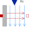

ConvectiveResistorLumped thermal element for heat convection (dT = Rc*Q_flow) |

|
Information
This information is part of the Modelica Standard Library maintained by the Modelica Association.
This is a model of linear heat convection, e.g., the heat transfer between a plate and the surrounding air; same as the Convection component but using the convective resistance instead of the convective conductance as an input. This is advantageous for series connections of ConvectiveResistors, especially if it shall be allowed that a convective resistance is defined to be zero (i.e. no temperature difference).
Connectors (3)
| Rc |
Type: RealInput Description: Signal representing the convective thermal resistance in [K/W] |
|
|---|---|---|
| solid |
Type: HeatPort_a |
|
| fluid |
Type: HeatPort_b |